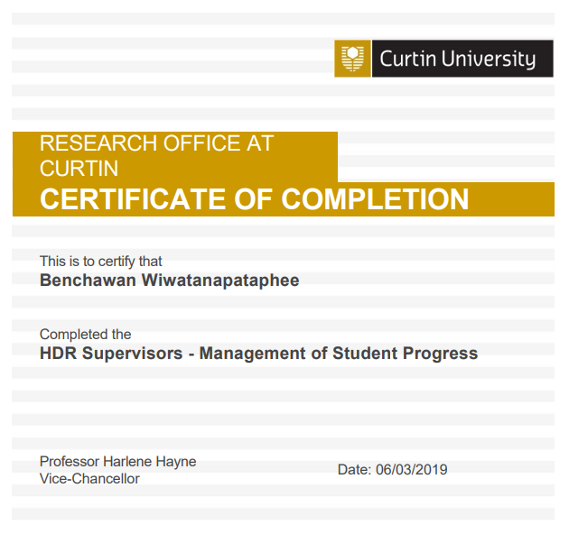
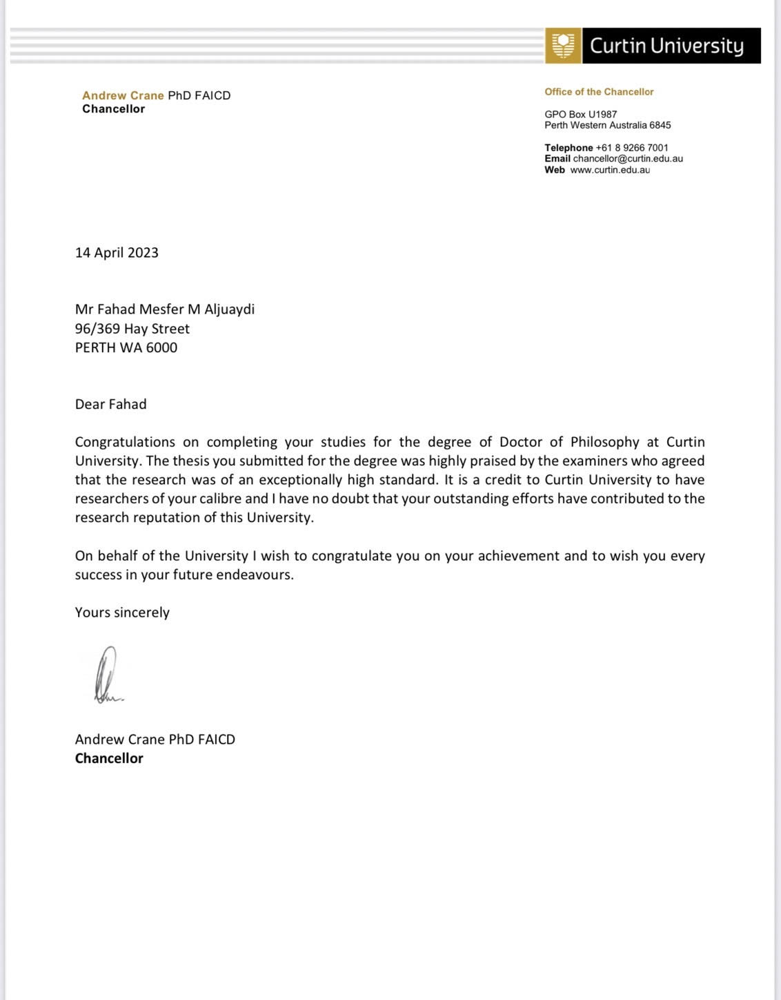
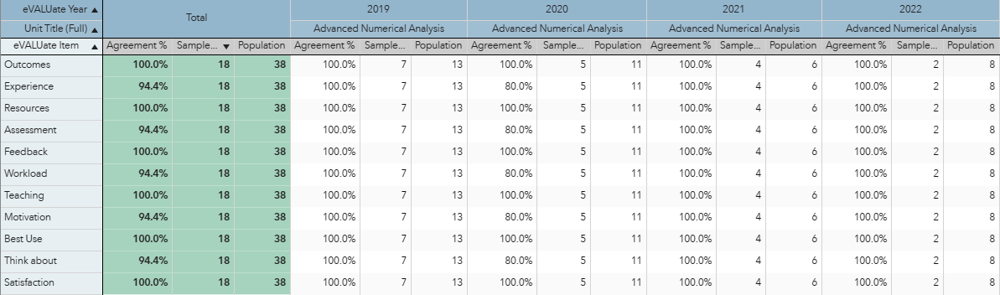
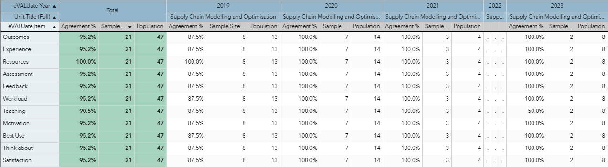

Peer Review of Educational Practice (PREP) Report and Action Plan: Digital Compendium
Capability area #1 — Build teaching capability
1. Development of Skills: I have completed various training courses for skill development including HDR Supervisors — Management of Student Progress
| Date | Description | Certificates |
|---|---|---|
| 11/12/2023, 12/09/2023, 10/07/2023 |
PREP Process for Reviewees |


|
| 06/03/2019 | HDR Supervisors — Management of Student Progress |  |
| 15/03/2016 | Assessment Feedback and Marking Workshop |
2. Knowledge Transfer: Since the year commenced at Curtin in 2015, I have supervised many undergraduate and postgraduate students from various cultural and academic backgrounds. Please click here to view a full list of students and supervision stats. The following dot points summarise my knowledge transfer ability.
- 48 undergraduate and masters students for MATH3004, MATH5001, MATH5003, MATH6001, and MATH6004.
- 3 honour students for STAT4000, STAT4001, and NPSC4001, especially Aden Pegler obtained first-class honour.
- 13 PhD students to completion (2 as main supervisor and 11 as co-supervisor). Particularly, Fahad Aljuaydi, the PhD under my supervision, received a commendation from the Chancellor of the university for the high quality of the thesis.
 - Additionally, I have also served as a cross-university co-advisor for 6 PhD students from Mahidol University. The following is the list of students.
3. Evidence of Supporting Enhanced Teaching Quality:
- Line Manager's comments on 2020-2022 Performance and Career Plans (PACs) have emphasised significant contributions to my onshore and offshore teaching. Please click the following link to access my career planning
- 2019-2023 eVALUate results show outstanding feedback and a high satisfaction rate.
- Advanced Numerical Analysis
 - Supply Chain Modelling and Optimisation

- Advanced Numerical Analysis